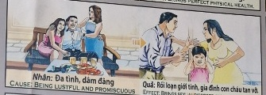

Los Espejos Rotos Broken Mirrors Specchi rotti 破碎的镜子 مرايا مكسورة Разбитые зеркала Zerbrochene Spiegel Miroirs brisés 壊れた鏡 Espelhos Quebrados
La fragmentación del alma y la familia. Fragmentation of the heart and family. La frammentazione dell'anima e della famiglia. 灵魂和家庭的支离破碎。 تفكك الروح والأسرة. Раздробленность души и семьи. Die Zersplitterung der Seele und der Familie. La fragmentation de l'âme et de la famille. 魂と家族の断片化。 A fragmentação da alma e da família.
Ibrahim vivía para el placer insaciable de los sentidos, viendo a las personas como objetos. Esa energía de desunión quedó impresa en su núcleo espiritual como una Causa de fractura emocional profunda.
Ibrahim lived for the insatiable pleasure of the senses, seeing people as objects. That energy of disunity was imprinted in his spiritual core as a Cause of deep emotional fracture.
"Aquel que siembra desorden en los corazones de otros, cosechará el desorden en su propia estirpe."
"He who sows disorder in the hearts of others will reap disorder in his own lineage."
El Espejo de las Promesas
The Mirror of Promises
Lo specchio delle promesse
承诺之镜
مرآة الوعود
Зеркало обещаний
Der Spiegel der Versprechen
Le miroir des promesses
約束の鏡
O espelho das promessas
Había una vez un hombre encantador que iba de pueblo en pueblo, enamorando corazones y luego marchándose en la oscuridad, dejando tras de sí solo lágrimas e ilusiones rotas. Creía ser libre como el viento...
Sin embargo, el universo tiene una memoria infinita. Años más tarde, o quizá en otra vida, este mismo hombre se encontró sentado frente a una mesa enorme, llena de manjares, pero completamente solo. Ningún amigo le visitaba, ningún amor se quedaba a su lado. Sentía un frío en el alma que ningún fuego podía calentar.
Aquella soledad no era un castigo cruel del cielo. Eran las mismas lágrimas que él había dejado caer, ahora convertidas en un mar que lo separaba del mundo. Comprendió entonces que cuando rompía el corazón de otro, en realidad, estaba vaciando el suyo propio. Y al derramar su primera lágrima sincera, el universo, con paciencia infinita, le entregó la primera semilla para por fin aprender a amar.
Once upon a time there was a charming man who went from town to town, winning hearts and then leaving in the darkness, leaving behind only tears and broken illusions. I thought I was free like the wind...
However, the universe has an infinite memory. Years later, or perhaps in another life, this same man found himself sitting in front of a huge table, full of delicacies, but completely alone. No friend visited him, no love stayed by his side. He felt a cold in his soul that no fire could warm.
That loneliness was not a cruel punishment from heaven. They were the same tears that he had let fall, now converted into a sea that separated him from the world. He understood then that when he broke another's heart, he was actually emptying his own. And when she shed her first sincere tear, the universe, with infinite patience, gave her the first seed to finally learn to love.
C'era una volta un uomo affascinante che andava di città in città, conquistando i cuori e poi scomparendo nell'oscurità, lasciando dietro di sé solo lacrime e illusioni infrante. Pensavo di essere libero come il vento...
Tuttavia, l’universo ha una memoria infinita. Anni dopo, o forse in un'altra vita, questo stesso uomo si ritrovò seduto davanti ad un enorme tavolo, pieno di prelibatezze, ma completamente solo. Nessun amico lo ha visitato, nessun amore è rimasto al suo fianco. Sentì un freddo nell'anima che nessun fuoco poteva riscaldare.
Quella solitudine non era una punizione crudele dal cielo. Erano le stesse lacrime che aveva lasciato cadere, ora trasformate in un mare che lo separava dal mondo. Capì allora che quando spezzava il cuore di un altro, in realtà stava svuotando il proprio. E quando ha versato la sua prima lacrima sincera, l'universo, con infinita pazienza, le ha donato il primo seme per imparare finalmente ad amare.
从前，有一个迷人的男人，他从一个城镇到另一个城镇，赢得了芳心，然后在黑暗中离开，留下的只有泪水和破碎的幻想。我以为我像风一样自由...
然而，宇宙有无限的记忆。多年后，或者也许在另一个世界，这个人发现自己坐在一张巨大的桌子前，桌子上摆满了美味佳肴，但完全孤独。没有朋友来看望他，没有爱人陪伴在他身边。他感到灵魂深处一片寒冷，任何火都无法温暖。
那种孤独并不是来自上天的残酷惩罚。那是他曾经流下的泪水，现在变成了将他与世界隔开的大海。他这才明白，当他伤了别人的心时，其实也是掏空了自己的心。而当她流下第一滴真诚的眼泪时，宇宙以无限的耐心，给了她第一颗终于学会爱的种子。
كان ياما كان، كان هناك رجل ساحر يتنقل من مدينة إلى أخرى، يكسب القلوب ثم يغادر في الظلام، ولم يترك وراءه سوى الدموع والأوهام المكسورة. ظننت أنني حر كالريح..
ومع ذلك، فإن الكون لديه ذاكرة لا نهاية لها. وبعد سنوات، أو ربما في حياة أخرى، وجد هذا الرجل نفسه جالساً أمام طاولة ضخمة، مليئة بالمأكولات الشهية، لكنه وحيداً تماماً. لم يزره صديق، ولا حب بقي إلى جانبه. شعر ببرد في روحه لا تستطيع النار أن تدفئه.
لم تكن تلك الوحدة عقوبة قاسية من السماء. كانت نفس الدموع التي تركها تسقط، وتحولت الآن إلى بحر يفصله عن العالم. لقد فهم حينها أنه عندما يكسر قلب شخص آخر، فإنه في الواقع يفرغ قلبه. وعندما ذرفت دمعتها الصادقة الأولى، أعطاها الكون، بصبر لا نهاية له، البذرة الأولى لتتعلم أخيرًا الحب.
Жил-был очаровательный мужчина, который ходил из города в город, завоевывая сердца, а затем уходя во тьму, оставляя после себя только слезы и разбитые иллюзии. Я думал, что свободен, как ветер...
Однако Вселенная имеет бесконечную память. Спустя годы, а может быть, и в другой жизни, этот же человек оказался сидящим перед огромным столом, полным деликатесов, но совершенно один. Ни один друг не посетил его, ни одна любовь не осталась рядом с ним. Он почувствовал в душе холод, который не мог согреть никакой огонь.
Это одиночество не было жестоким наказанием небес. Это были те же слезы, которые он пролил, теперь превратившиеся в море, отделяющее его от мира. Тогда он понял, что, разбивая чужое сердце, на самом деле он опустошает свое собственное. И когда она пролила свою первую искреннюю слезу, Вселенная с бесконечным терпением дала ей первое семя, чтобы наконец научиться любить.
Es war einmal ein charmanter Mann, der von Stadt zu Stadt zog, Herzen gewann und dann in der Dunkelheit verschwand, wobei er nur Tränen und zerbrochene Illusionen zurückließ. Ich dachte, ich wäre frei wie der Wind ...
Das Universum verfügt jedoch über ein unendliches Gedächtnis. Jahre später, oder vielleicht in einem anderen Leben, saß derselbe Mann vor einem riesigen Tisch voller Köstlichkeiten, aber völlig allein. Kein Freund besuchte ihn, keine Liebe blieb an seiner Seite. Er spürte eine Kälte in seiner Seele, die kein Feuer erwärmen konnte.
Diese Einsamkeit war keine grausame Strafe vom Himmel. Es waren die gleichen Tränen, die er fallen gelassen hatte, jetzt verwandelt in ein Meer, das ihn von der Welt trennte. Da verstand er, dass er, wenn er einem anderen das Herz brach, in Wirklichkeit sein eigenes leerte. Und als sie ihre erste aufrichtige Träne vergoss, gab ihr das Universum mit unendlicher Geduld den ersten Samen, um endlich lieben zu lernen.
Il était une fois un homme charmant qui allait de ville en ville, conquérant les cœurs puis repartant dans l'obscurité, ne laissant derrière lui que des larmes et des illusions brisées. Je pensais que j'étais libre comme le vent...
Pourtant, l’univers possède une mémoire infinie. Des années plus tard, ou peut-être dans une autre vie, ce même homme s'est retrouvé assis devant une immense table, pleine de gourmandises, mais complètement seul. Aucun ami ne lui a rendu visite, aucun amour n'est resté à ses côtés. Il ressentit un froid dans son âme qu'aucun feu ne pouvait réchauffer.
Cette solitude n’était pas une punition cruelle venue du ciel. C'étaient les mêmes larmes qu'il avait laissé couler, désormais transformées en une mer qui le séparait du monde. Il comprit alors que lorsqu'il brisait le cœur d'autrui, il vidait en réalité le sien. Et lorsqu’elle versa sa première larme sincère, l’univers, avec une infinie patience, lui donna la première graine pour enfin apprendre à aimer.
むかしむかし、町から町へと渡り歩き、人々の心を掴み、そして涙と壊れた幻影だけを残して闇の中に去っていった魅力的な男がいました。風のように自由だと思っていたのに…
しかし、宇宙には無限の記憶があります。数年後、あるいはおそらく別の人生で、この同じ男性は、ごちそうでいっぱいの巨大なテーブルの前に座っていましたが、完全に孤独でした。彼を訪ねてくる友人もいなかったし、そばにいた愛もなかった。彼は魂に火が暖められないほどの寒さを感じた。
その孤独は天からの残酷な罰ではなかった。それは彼が流した涙と同じもので、今では彼を世界から隔てる海となった。そのとき彼は、他人の心を傷つけるということは、実は自分の心を空っぽにしていることになるということを理解したのです。そして彼女が初めて心からの涙を流したとき、宇宙は無限の忍耐をもって彼女に、ついに愛することを学ぶための最初の種を与えた。
Era uma vez um homem encantador que ia de cidade em cidade, conquistando corações e depois partindo na escuridão, deixando para trás apenas lágrimas e ilusões desfeitas. Eu pensei que estava livre como o vento...
No entanto, o universo tem uma memória infinita. Anos depois, ou talvez em outra vida, esse mesmo homem se viu sentado diante de uma enorme mesa, repleta de iguarias, mas completamente sozinho. Nenhum amigo o visitou, nenhum amor ficou ao seu lado. Ele sentiu um frio na alma que nenhum fogo poderia aquecer.
Essa solidão não foi um castigo cruel do céu. Eram as mesmas lágrimas que ele deixara cair, agora convertidas num mar que o separava do mundo. Ele entendeu então que quando quebrava o coração de outra pessoa, na verdade estava esvaziando o seu próprio. E quando ela derramou a primeira lágrima sincera, o universo, com infinita paciência, deu-lhe a primeira semente para finalmente aprender a amar.

La Inspiración Original
The Original Inspiration
L'Ispirazione Originale
最初的灵感
الإلهام الأصلي
Оригинальное вдохновение
Die Ursprüngliche Inspiration
L'Inspiration Originale
元のインスピレーション
A Inspiração Original
La historia que hemos relatado en este capítulo está inspirada por el pasaje de la escena original de los murales «Tranh Nhân Quả» (Ilustraciones del Karma) del Templo Linh Ung en Da Nang, capturado en la imagen.
La storia che abbiamo raccontato in questo capitolo è ispirata al passaggio della scena originale dei murali “Tranh Nhân Quả” (Illustrazioni del Karma) del Tempio Linh Ung a Da Nang, catturati nell'immagine.
我们在本章中讲述的故事的灵感来自图像中捕获的岘港灵应寺“Tranh Nhân Quả”（业力插图）壁画的原始场景。
القصة التي رويناها في هذا الفصل مستوحاة من مقطع من المشهد الأصلي لجداريات "ترانه نهان كو" (الرسوم التوضيحية للكارما) لمعبد لينه أونغ في دا نانغ، الملتقطة في الصورة.
История, которую мы рассказали в этой главе, вдохновлена отрывком из оригинальной сцены фрески «Тран Нхан Ку» («Иллюстрации кармы») храма Линь Унг в Дананге, запечатленной на изображении.
Die Geschichte, die wir in diesem Kapitel erzählt haben, ist inspiriert von der Passage aus der Originalszene der Wandgemälde „Tranh Nhân Quả“ (Illustrationen von Karma) des Linh Ung-Tempels in Da Nang, die im Bild festgehalten ist.
L'histoire que nous avons racontée dans ce chapitre est inspirée du passage de la scène originale des peintures murales « Tranh Nhân Quả » (Illustrations du Karma) du temple Linh Ung à Da Nang, capturées dans l'image.
この章で私たちが語った物語は、ダナンのリンウン寺院の壁画「Tranh Nhân Quả」（カルマの図）の元のシーンの一節からインスピレーションを得て、画像に収められています。
A história que contamos neste capítulo é inspirada na passagem da cena original dos murais “Tranh Nhân Quả” (Ilustrações do Karma) do Templo Linh Ung em Da Nang, capturada na imagem.
The story we have related in this chapter is inspired by the passage from the original scene of the "Tranh Nhân Quả" (Karma Illustrations) murals at the Linh Ung Temple in Da Nang, captured in the image.

Como se puede apreciar en el pasaje extraído del mural, la causa y su efecto kármico están descritos originalmente en vietnamita y con una breve traducción al inglés. A continuación, te ofrecemos la traducción y el análisis en tu idioma:
As can be seen in the passage extracted from the mural, the cause and its karmic effect are originally described in Vietnamese with a brief English translation. Below, we offer the translation and analysis in your language:
Come si può vedere nel brano tratto dal murale, la causa e il suo effetto karmico sono originariamente descritti in vietnamita e con una breve traduzione in inglese. Di seguito offriamo la traduzione e l'analisi nella tua lingua:
从壁画的段落中可以看出，因果及其业果最初是用越南语描述的，并有简短的英文翻译。下面我们提供您的语言的翻译和分析：
وكما يتبين من المقطع المأخوذ من اللوحة الجدارية، فإن السبب وتأثيره الكارمي موصوفان في الأصل باللغة الفيتنامية مع ترجمة مختصرة إلى الإنجليزية. نقدم أدناه الترجمة والتحليل بلغتك:
Как видно из отрывка, взятого из фрески, причина и ее кармическое следствие изначально описаны на вьетнамском языке и с кратким переводом на английский язык. Ниже мы предлагаем перевод и анализ на ваш язык:
Wie aus der Passage aus dem Wandgemälde hervorgeht, werden die Ursache und ihre karmische Wirkung ursprünglich auf Vietnamesisch und mit einer kurzen Übersetzung ins Englische beschrieben. Nachfolgend bieten wir die Übersetzung und Analyse in Ihrer Sprache an:
Comme on peut le voir dans le passage tiré de la peinture murale, la cause et son effet karmique sont initialement décrits en vietnamien et avec une brève traduction en anglais. Ci-dessous, nous proposons la traduction et l’analyse dans votre langue :
壁画の一節からわかるように、原因とそのカルマ的影響はもともとベトナム語で説明されており、英語への簡単な翻訳が付けられています。以下にあなたの言語での翻訳と分析を提供します。
Como pode ser visto no trecho retirado do mural, a causa e seu efeito cármico são originalmente descritos em vietnamita e com uma breve tradução para o inglês. Abaixo oferecemos a tradução e análise em seu idioma:
🇻🇳 Tiếng Việt:
Nhân: Đa tình, dâm đãng.
Quả: Rối loạn giới tính, gia đình con cháu tan vỡ.
🇬🇧 English Translation:
Cause: Being lustful and promiscuous.
Effect: Brings sex disorder and a broken family.
Traducción Recreada:
Causa: Ser lujurioso y promiscuo rompiendo familias ajenas.
Efecto: Atrae desórdenes sexuales y el quiebre de tu propia familia.
Recreated Translation:
Cause: Being lustful and promiscuous, breaking up other people's families.
Effect: Attracts sexual disorders and the breakup of your own family.
Traduzione ricreata:
Causa: essere lussuriosi e promiscui, dividere le famiglie di altre persone.
Effetto: attira disordini sessuali e la disgregazione della propria famiglia.
译文：
因：好色淫乱，拆散他人家庭。
果：招性欲障碍，家庭破裂。
الترجمة المعاد إنشاؤها:
السبب: كونك شهوانيا وغير شرعي، مما يؤدي إلى تفكيك عائلات الآخرين.
التأثير: يجذب الاضطرابات الجنسية ويؤدي إلى تفكك عائلتك.
Воссозданный перевод:
Причина: Похотливость и распущенность, разрушение семей других людей.
Эффект: Привлекает сексуальные расстройства и распад собственной семьи.
Nachgebildete Übersetzung:
Ursache: Lustvoll und promiskuitiv sein, die Familien anderer Leute zerstören.
Wirkung: Führt zu sexuellen Störungen und zum Auseinanderbrechen der eigenen Familie.
Traduction recréée :
Cause : Être lubrique et promiscuité, briser les familles des autres.
Effet : Attire les troubles sexuels et l'éclatement de votre propre famille.
再作成された翻訳:
原因: 好色で乱交的であり、他人の家族を崩壊させます。
結果: 性的障害と自分の家族の崩壊を引き付けます。
Tradução recriada:
Causa: Ser lascivo e promíscuo, desmembrando a família de outras pessoas.
Efeito: Atrai distúrbios sexuais e a dissolução de sua própria família.
Análisis: La deslealtad narcisista, que busca la saciedad destruyendo los cimientos afectivos, condena al alma a sufrir el mismo y doloroso desarraigo. Jugar con los sentimientos y la intimidad de los demás nos sitúa, inexorablemente, frente al espejo de la profunda soledad y la desunión del propio linaje, obligándonos a cosechar la frialdad que una vez esparcimos.
Analysis: Narcissistic disloyalty, which seeks satiety by destroying the emotional foundations, condemns the soul to suffer the same painful uprooting. Playing with the feelings and intimacy of others places us, inexorably, in front of the mirror of the deep loneliness and disunity of one's own lineage, forcing us to reap the coldness that we once spread.
Analisi: La slealtà narcisistica, che ricerca la sazietà distruggendo le basi emotive, condanna l'anima a subire lo stesso doloroso sradicamento. Giocare con i sentimenti e l'intimità degli altri ci pone, inesorabilmente, davanti allo specchio della profonda solitudine e disunità del proprio lignaggio, costringendoci a raccogliere la freddezza che un tempo diffondevamo.
分析：自恋式的不忠，通过破坏情感基础来寻求满足，使灵魂遭受同样痛苦的连根拔起。玩弄他人的感情和亲密关系，无情地将我们置于自己血统的深深孤独和不团结的镜子前，迫使我们收获曾经传播的冷漠。
التحليل: الخيانة النرجسية، التي تسعى إلى الشبع من خلال تدمير الأسس العاطفية، تحكم على الروح بأن تعاني من نفس الاقتلاع المؤلم. إن اللعب بمشاعر الآخرين وعلاقاتهم الحميمية يضعنا، بلا هوادة، أمام مرآة الشعور بالوحدة العميقة والانقسام في نسبنا، مما يجبرنا على جني البرود الذي نشرناه ذات يوم.
Анализ: Нарциссическая нелояльность, которая ищет насыщения путем разрушения эмоциональных основ, обрекает душу на такое же болезненное изгнание. Игра с чувствами и близостью других неумолимо ставит нас перед зеркалом глубокого одиночества и разобщенности собственного рода, заставляя пожинать холод, который мы когда-то распространяли.
Analyse: Narzisstische Illoyalität, die durch die Zerstörung der emotionalen Grundlagen nach Sättigung strebt, verurteilt die Seele dazu, die gleiche schmerzhafte Entwurzelung zu erleiden. Das Spiel mit den Gefühlen und der Intimität anderer stellt uns unaufhaltsam vor den Spiegel der tiefen Einsamkeit und Uneinigkeit der eigenen Abstammung und zwingt uns, die Kälte zu ernten, die wir einst verbreitet haben.
Analyse : La déloyauté narcissique, qui recherche la satiété en détruisant les fondements émotionnels, condamne l'âme à subir le même déracinement douloureux. Jouer avec les sentiments et l'intimité des autres nous place, inexorablement, devant le miroir de la profonde solitude et de la désunion de notre propre lignée, nous obligeant à récolter la froideur que nous répandions autrefois.
分析: 感情的基盤を破壊することで満腹を求めるナルシシスティックな不誠実は、魂を同様の痛みを伴う根こそぎに苦しめることを非難します。他人の感情や親密さをもてあそぶと、私たちは容赦なく、自分自身の血統の深い孤独と不和を映す鏡の前に置かれ、かつて自分が広めた冷たさを刈り取らざるを得なくなります。
Análise: A deslealdade narcísica, que busca a saciedade destruindo os fundamentos emocionais, condena a alma a sofrer o mesmo doloroso desenraizamento. Brincar com os sentimentos e a intimidade dos outros nos coloca, inexoravelmente, diante do espelho da profunda solidão e desunião da própria linhagem, obrigando-nos a colher a frieza que outrora espalhamos.
Si quieres conocer más sobre el proyecto o colaborar, accede a nuestro Linktree.
If you want to know more about the project or collaborate, access our Linktree.
Se vuoi saperne di più sul progetto o collaborare, accedi al nostro Linktree.
如果您想了解有关该项目或合作的更多信息，请访问我们的 Linktree.
إذا كنت تريد معرفة المزيد عن المشروع أو التعاون، قم بالوصول إلى موقعنا Linktree.
Если вы хотите узнать больше о проекте или сотрудничать, посетите наш Linktree.
Wenn Sie mehr über das Projekt erfahren oder zusammenarbeiten möchten, greifen Sie auf unsere zu Linktree.
Si vous souhaitez en savoir plus sur le projet ou collaborer, accédez à notre Linktree.
プロジェクトについて詳しく知りたい場合、またはコラボレーションしたい場合は、こちらにアクセスしてください。 Linktree.
Se quiser saber mais sobre o projeto ou colaborar, acesse nosso Linktree.